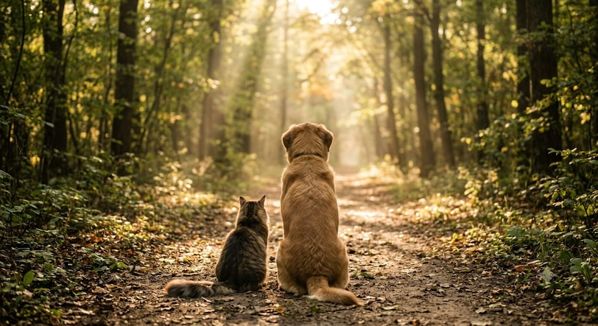
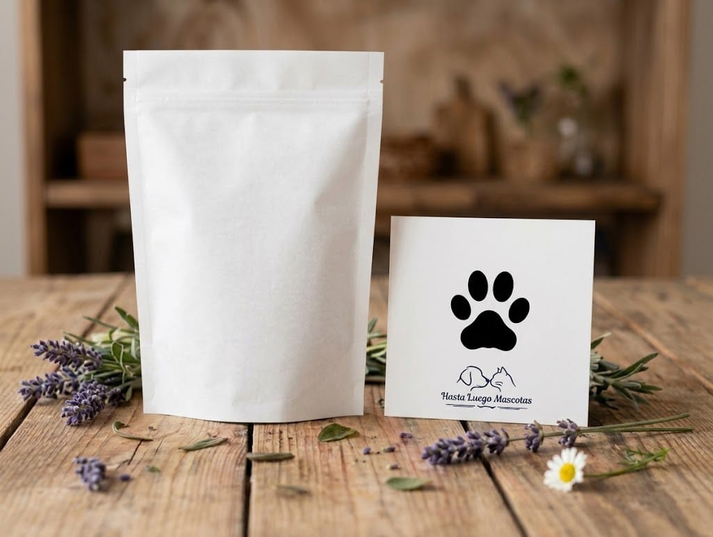
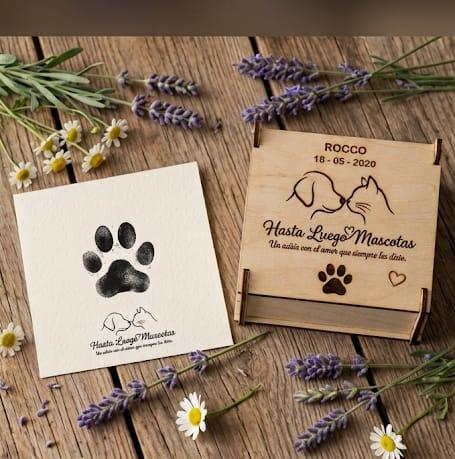

Un adiós con el amor que siempre le diste
Sabemos que despedir a un compañero de toda la vida es un momento muy difícil. En Hasta Luego Mascotas te acompañamos con el respeto y la empatía que se merece.

Cremación individual con retiro del cuerpo. Pensado para quienes desean una despedida digna y cerrar un ciclo, sin la devolución de las cenizas.

Cremación individual con retiro del cuerpo. Las cenizas te son devueltas con el mayor cuidado en un empaque de papel biodegradable, ideal para una despedida natural y respetuosa.

Un homenaje único y totalmente adaptado a tu deseo: las cenizas se entregan en una hermosa cajita de madera que podés personalizar con su nombre o frase para recordarlo siempre con amor.
Somos una familia dedicada a acompañar a otras familias en los momentos más difíciles. Entendemos que nuestras mascotas no son solo animales, sino miembros fundamentales de nuestro hogar, y nuestro propósito es brindarles una despedida a la altura del amor incondicional que nos dieron.
Porque creemos que el respeto y la empatía son esenciales para cerrar un ciclo. Sabemos por experiencia propia lo que significa perder a un compañero fiel y, al no encontrar servicios que reflejen esa sensibilidad, decidimos crear Hasta Luego Mascotas. Lo hacemos para transformar el dolor en un recuerdo sereno, cuidando cada detalle con el mismo esmero con el que cuidamos a los nuestros.
Acompañamiento empático: No somos solo un servicio, somos personas entendiendo a personas que atraviesan una pérdida.
Personalización: Ofrecemos opciones únicas, como urnas personalizadas, para que el homenaje sea tan especial como lo fue su vida junto a ustedes.
Compromiso y respeto: Nos encargamos de todo el proceso con la máxima profesionalidad y sensibilidad, garantizando que cada mascota reciba la despedida digna que merece.
Opiniones reales de familias en Google Maps
"Quiero agradecer profundamente a todo el equipo la manera en que nos acompañaron en este momento tan doloroso. Despedir a un compañero de la vida nunca es fácil, y mucho menos cuando el compañero fue para mí mi hijo. Después de 16 años juntos, tener que decirle adiós fue uno de los momentos más difíciles que me tocó atravesar... Desde el primer momento encontré en ustedes algo fundamental: calidez, respeto, empatía y sobre todo mucha humanidad. No sentí que estaba atravesando simplemente un trámite, sino que estaban comprendiendo la importancia y el dolor que significaba esa despedida.
Agradezco muchísimo el cuidado, la delicadeza y el acompañamiento durante todo el proceso. En medio de un momento tan triste, sentí que mi hijo fue tratado con amor y respeto, lo que significó muchísimo para mí. Gracias por hacer que una despedida tan dolorosa pudiera ser también un momento de paz y amor. Me llevo una enorme gratitud por la forma en que nos acompañaron y por haber cuidado de él hasta el último momento. Gracias de corazón."
"Me sentí acompañada y comprendida. Nuestras mascotas son parte de nuestra familia y no todos lo entienden. Muchas gracias por todo."
"Excelente servicio de cremación de mascotas dirigida por seres humanos cálidos y contenedores. Estoy realmente satisfecha con las urnas y el retrato de mi fiel llamado K.A. La impresión de la huella no lo esperaba, me encantó, gracias."
"Excelente. Se nota que saben que no es solo un animal, sino que es un miembro de la familia y muy agradecida por su buen trato, su respeto y calidez."